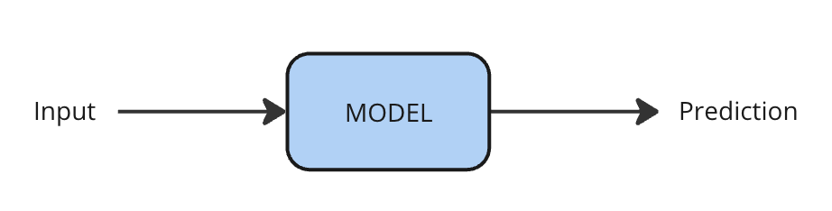
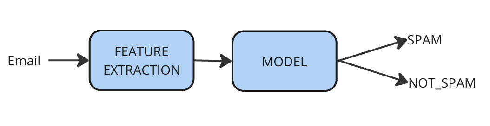
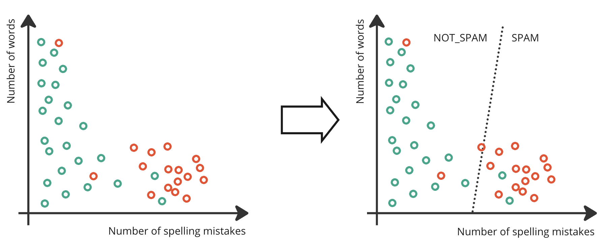

Supervised Learning
Learning Objectives
This section will help you understand:
- What supervised learning is, and where you can use it
- The difference between classification and regression
- Some of the supervised learning algorithms you might encounter
- Some real-world examples of supervised learning in research
What is supervised learning?
Supervised learning is one of the most widely used types of machine learning in the field of AI. Supervised models make predictions about their inputs. They learn how to make those predictions from a dataset of examples that are labelled with the correct prediction (also called the ground truth).
Our job in using supervised learning is to define what the input and output of a model should be, to obtain the labelled data, and then to train the model to make accurate predictions.

One example of supervised learning is that of predicting whether an email is spam or not. In this example, there are two categories, or classes - SPAM and NOT_SPAM.
Our machine learning models cannot directly accept email text as input, so first we extract features from each of the emails. Three features might be, for example, the length of the email, the number of spelling mistakes, and the number of dollar signs in the email.

By training the model directly on a dataset of emails that have been labelled as being spam or not, the model can learn the patterns that identify the two types of email, and then predict for a new email whether it is spam or not.
Classification and Regression
Supervised learning can either be classification or regression.
Classification is where the output is one of a fixed number of categories. This could be a binary classification task where there are exactly two possible outputs, like the example above of spam email detection. You can think of this as finding a line to separate the two classes, as here:

Though, more complex classifiers draw lines that are more complex than just a straight line.
A different task might have multiple categories that an input could belong to. For example, recognising the face of a person in a photo. There are many possible people who could be pictured in the photo, and each person is a possible category.

In other scenarios, an input might have more than one label. For example, a photo might have two or more different people in it, and we'd like to identify each. This is called multi-label classification.
Sometimes the number of classes can be very large, as in the case of many language processing tasks. Automatically translating text from one language to another is a supervised task, where the model predictions are words in the target language.
Regression is similar to classification, except that the output is a continuous number rather than a discrete class. Examples might be predicting the toxicity of a molecule on a scale.

Examples of Supervised Learning
Examples of supervised learning tasks include:
| Task | Input | Prediction |
|---|---|---|
| Segment tumours in medical images | Medical images | Areas which are tumours |
| Toxicity prediction | Chemical formula | Toxicity |
| Medical Diagnosis | Biomarkers, test results etc. | Diagnosis |
| Automated transcription | Audio files | Written transcription |
| Machine translation | Text in the source language | Text in the target language |
Types of Supervised Learning Model
Some of the common supervised learning algorithms you might encounter are:
- Linear Regression
- Logistic Regression
- Decision Trees
- Support Vector Machines
- Neural Networks
Much of the recent excitement around AI focuses on neural network approaches. However, depending on your data and task, the other algorithms may be more practical to use.
Feature Extraction
It's worth noting that models require numerical inputs as it's something you'll need to consider in designing your setup. Some tasks naturally have numerical inputs already - whether that's data from sensors, medical tests, pixel values or something else that's naturally a number. In other tasks, we need to convert our input to a numerical format by extracting features.
Top Tips for getting started
- A great place to begin is by thinking about the task you want to used supervised learning for. Can you define your task as a supervised learning one? What are the inputs and predictions of your model?
- Next, think about the data you have. Can you label it easily?
- Evaluating your model is also important, and at this point it's feasible to think about how you'll evaluate whether your system is working. What metrics could you use?
- What are the risks and concerns with your proposed work?
Once you've answered these questions, you're ready to move onto training a model.
Inspiration
Find more examples of research using supervised learning on Accelerate's blog:
- Nicola Moloney talks about using supervised learning to predict where proteins are localised within a cell
- Joyce Nakatumba-Nabende discusses how speech recognition can be deployed to help farmers in Uganda
- Yizhou Wan tells us how AI can be used to segment brain tumours in images, and to estimate their volume
- Chris Bannon hopes to predict whether someone's gut biome or metabolic marker levels are that of a healthy person, or whether they have a metabolic or bowel condition
Contact
If you can't find what you need